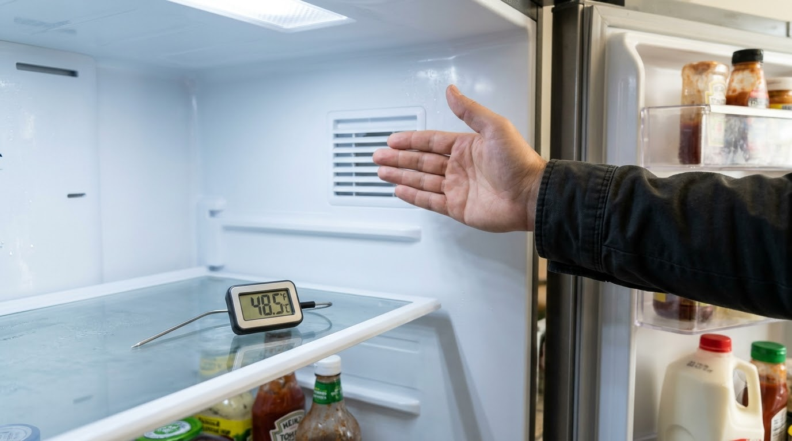

Symptom 01
1. Refrigerator Not Cooling
What You May Notice: Interior feels warm, perishables spoil rapidly, or the cabinet interior remains at ambient room temperature while the interior light works.
Possible Broad Causes: Heavy dust accumulation on external condenser coils, failed evaporator circulation fan, frosted airflow damper, thermostat setting drift, or relay disengagement.
What You Can Safely Observe: Check whether temperature dial was bumped; verify rear ventilation space (at least 2–3 inches from wall); verify interior light turns off when door switch is pressed.
When to Request Professional Inspection: If coil cleaning and control checks do not drop temperatures within 6 hours, or the compressor remains silent while warm.
Request Cooling Assessment